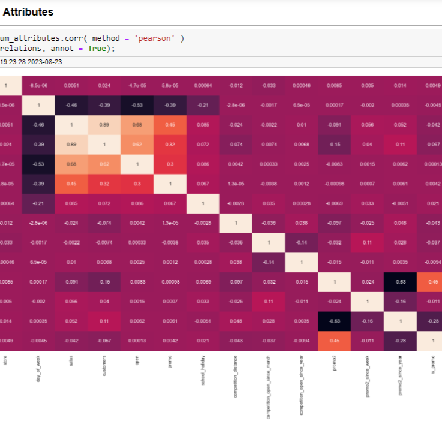

Utilizando a metodologia CRISP DM, este é um projeto com um ciclo completo desde a aquisição dos dados até a entrega
de modelo de machine learning treinado em produção utilizando o Render para criar um app no Telegram.
As ferramentas utilizadas foram:
Limpeza de dados com Pandas
Análise exploratória de dados usando Seaborn
Algorítmos de Machine Learning com Sklearn
Processo de Cross Validation e Fine Tuning
Publicação de app usando Render

O projeto é fruto de um curso de manipulação de dados usando Python. Aqui temos a criação de um Dahsboard interativo utilizando
o Streamlit, uma plataforma baseada em Python com opção de deploy grátis.
As ferramentas utilizadas foram:
Limpeza de dados com Pandas
Criação de gráficos utilizando Plotly
Criação de mapa interativo utilizando o Folium
Publicação utilizando o Streamlit
Criação de funções auxiliares

Neste projeto nós limpamos uma base de dados de vendas de imóveis em Nashville utilizando SQL pelo programa SQL Server Studio.
As ferramentas utilizadas foram:
Convert functions
Self joins
Substring and Charindex
Over Partition By
CTEs

Neste projeto nós utilizamos a biblioteca BeautifulSoup do Python para conseguir uma base de dados de todos os filmes da Disney.
Essa base de dados conta com mais de 500 filmes e atributos como data de lançamento, duração e renda bruta.
As ferramentas utilizadas foram:
Scraping com BeautifulSoup e Requests
Criação de funções auxiliares
Limpeza de dados com Pandas